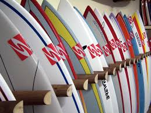
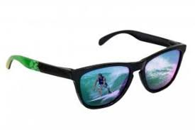

-
TABLAS
 -
CAMISETAS
-
GAFAS

Las tablas para aprender a hacer surf tienen unas características que hacen más fácil el aprendizaje, sus formas no son tan "cool" como las que llevan los máquinas de tu playa, pero son sin duda más efectivas. Un error de principiante muy común es intentar aprender con una tabla de surf estándar (shortboard), para surferos con cierto nivel, pero que no funcionan con principiantes.